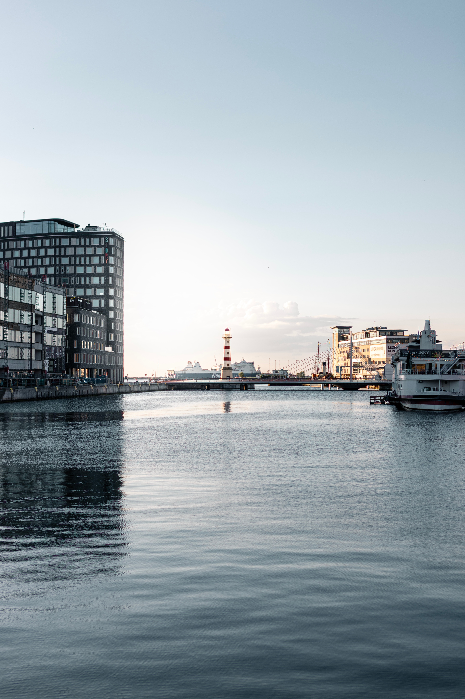

선수 보강을 원하는 리버풀은 코나테에 이어 또 다른 라이프치히 선수를 노릴 수도 있지 않을까? 디애슬레틱에 따르면, 라이프치히의 27살 마르셀 자비처는 팀을 떠나기 원하는 듯 하다. 그리고 라이프치히는 계약이 1년 남은 자비처의 몸값을 15m 선으로 정했다고 한다.
자비처는 지난 시즌 리그에서 27경기 나와 8골 4어시스트를 기록하며 좋은 활약을 했었다. 때문에 토트넘 등과 강하게 연결되기도 했는데미드필더 보강을 원하는 리버풀도 클롭이 원한다면 영입 경쟁에 참전할지도 모른다. 다만 자비처는 현재 유로 2021 오스트리아 국대 멤버로 차출되었기에, 구체적인 이적 협상은 유로가 끝나야 진행될 것으로 보인다.
